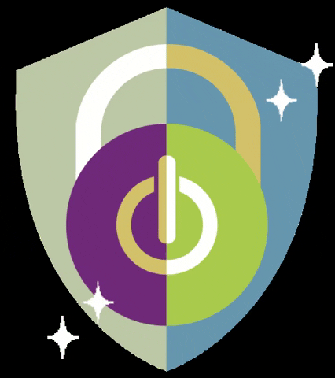
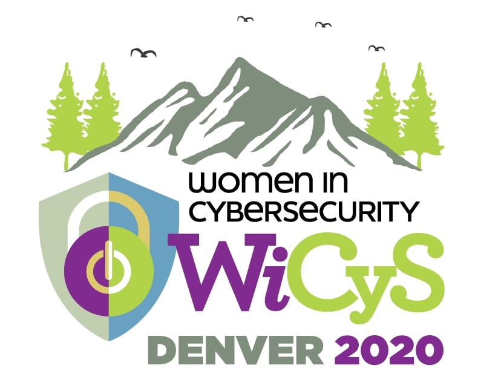

Women in Cybersecurity (WiCyS)
Women in Cybersecurity (WiCyS) is a community of engagement, encouragement, and support of women in cybersecurity. UTD WiCyS is a chapter of a national organization founded at UTD in 2019 as a subgroup of WWC in order to reach as many women as possible. Our chapter hopes to encourage women to pursue careers in the highly dynamic and expansive field of cybersecurity by offering tools, events, and networking opportunities throughout the academic year.
Membership
Since UTD WiCyS is a national chapter, a membership fee is required to become an official member of this organization. However, anyone and everyone is welcome to take part in events hosted by WiCyS without official membership! By obtaining national membership, official WiCyS members recieve added benefits, including the ability to post resumes to the WiCyS Job Board, discounts on the WiCyS Conference attendance, engagement through Market Studies, and access to extensive networking resources, and membership to the WiCyS Affiliate Program. For more information on WiCyS membership click on the picture below!
WiCyS Conference
WiCyS hosts an annual conference in the spring to connect companies, students, and experienced leaders and professionals in the field of cybersecurity. It is a great opprunity for women in cybersecurity to network, share knowledge and expertise, and recieve mentorship.
